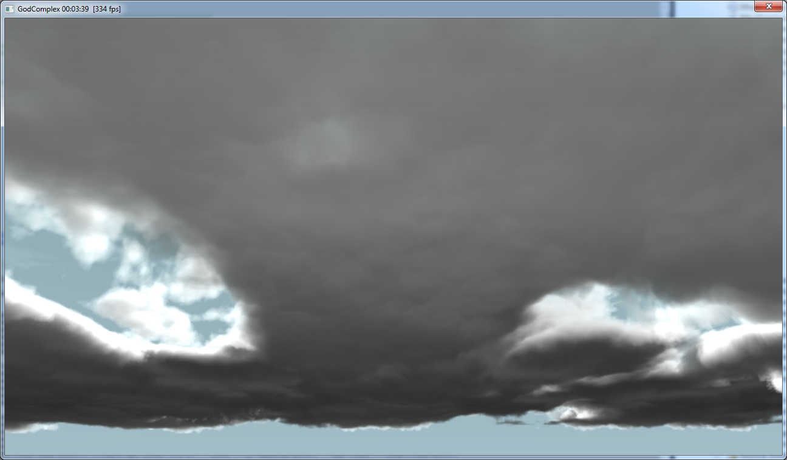
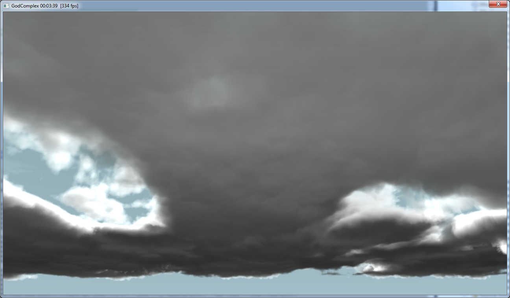

Revision 2013

I made a small presentation about realtime volumetric rendering at the Revision 2013 Demo Party in Saarebrück held during Easter holidays.
It was a little 8 minutes talk but the subject was quite vast so I had to cover it very quickly. The presentation's power point can be grabbed here.
This fast paced talk is accompanied by a much longer and much more detailed document containing the course notes. This document is available here.
Finally, the video shown during the presentation is simply the one from Nuaj':
I would have shown another video from my latest demo but Fraps is ignoring my D3D viewport and refuses to grab the video... :(

It was a little 8 minutes talk but the subject was quite vast so I had to cover it very quickly. The presentation's power point can be grabbed here.
This fast paced talk is accompanied by a much longer and much more detailed document containing the course notes. This document is available here.
Finally, the video shown during the presentation is simply the one from Nuaj':
I would have shown another video from my latest demo but Fraps is ignoring my D3D viewport and refuses to grab the video... :(
